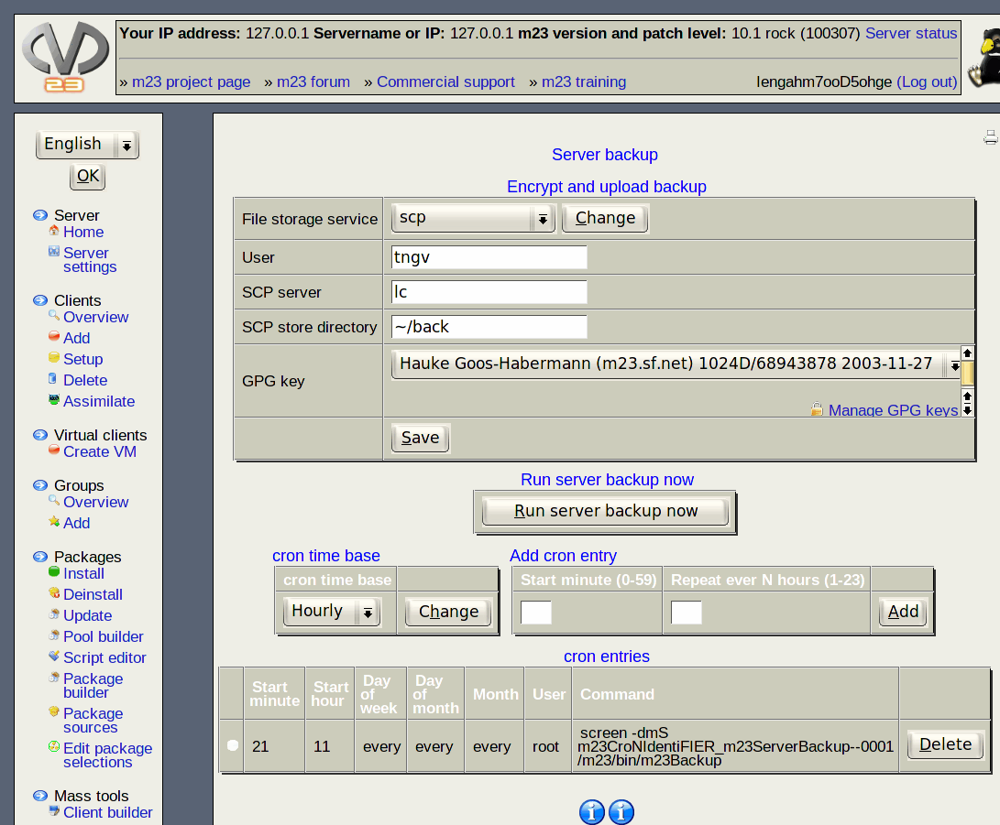

This dialog will help you to create automatic backups of your m23 server at given points in time. The backups are containing the rescue data to restore the m23 server, the configuration of the operating system and the list of the installed packages. It is possible to restore the m23 server to the last saved sate with these files after a data loss or other damage. The backuped data can be stored on an external server in the network or uploaded to the internet and are encrypted via GPG before the upload, to make your data confidential.

This dialog for storing, encrypting and uploading consists of two parts.
- Encrypt and upload backup: This part deals with the encryption of the backups and copying them on an external storage.
- cron settings: Here you can specify the parameters for the cron daemon to determine the points of time for the automatic backup process.
Subsections
dodger
2012-11-22